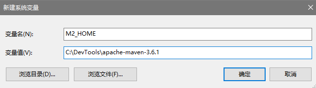
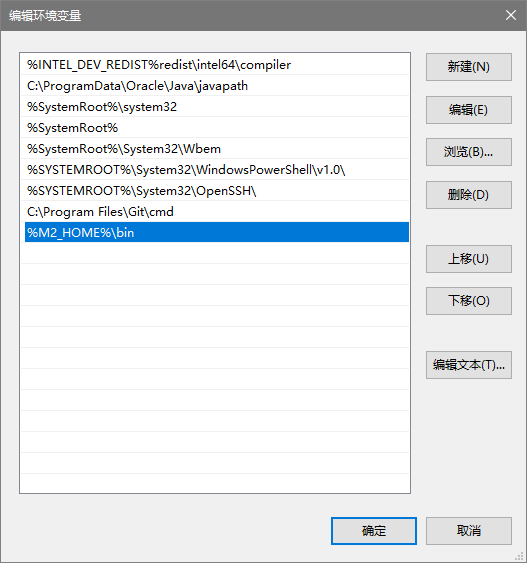

目录
-
- Maven 下载
-
- 配置 Maven 环境变量
-
- 查看 Maven 是否安装成功
-
- Maven 配置文件
-
- 修改本地仓库位置
-
- 添加国内镜像源
1. Maven 下载
官网下载地址：http://maven.apache.org/download.cgi
注意：
- Maven 3.3+ 版本的需要 JDK 1.7 或以上
- Maven 必须安装在非中文目录下
按需选择下载即可
（示例）安装目录：C:\DevTools\apache-maven-3.6.1
2. 配置 Maven 环境变量
步骤如下：
1) 进入系统设置
2) 高级系统设置 > 系统属性 > 高级 > 环境变量
3) 新建系统变量：M2_HOME
4) 在系统变量中找到Path，在其中添加：&M2_HOME&\bin
新建系统变量： 
编辑 Path 环境变量： 
3. 查看 Maven 是否安装成功
1) 打开 cmd 命令提示符
2) 输入命令：mvn -v
4. Maven 配置文件
Maven 配置文件的路径：C:\DevTools\apache-maven-3.6.1\conf\settings.xml
5. 修改本地仓库位置
在<localRepository>标签内添加自己的本地位置路径
（示例）本地仓库地址：C:\DevTools\mavenLocalRepository
<!-- localRepository
| The path to the local repository maven will use to store artifacts.
|
| Default: ${user.home}/.m2/repository
<localRepository>/path/to/local/repo</localRepository>
-->
<!-- 本地仓库地址 -->
<localRepository>C:\DevTools\mavenLocalRepository</localRepository>
6. 添加国内镜像源
添加<mirrors>标签下<mirror>，添加国内镜像源，这样下载jar包速度很快。默认的中央仓库有时候甚至连接不通。一般使用阿里云镜像库即可。
<!-- 国内镜像源 -->
<!-- 阿里云仓库 -->
<mirror>
<id>alimaven</id>
<mirrorOf>central</mirrorOf>
<name>aliyun maven</name>
<url>http://maven.aliyun.com/nexus/content/repositories/central/</url>
</mirror>
<!-- 中央仓库1 -->
<mirror>
<id>repo1</id>
<mirrorOf>central</mirrorOf>
<name>Human Readable Name for this Mirror.</name>
<url>http://repo1.maven.org/maven2/</url>
</mirror>
<!-- 中央仓库2 -->
<mirror>
<id>repo2</id>
<mirrorOf>central</mirrorOf>
<name>Human Readable Name for this Mirror.</name>
<url>http://repo2.maven.org/maven2/</url>
</mirror>